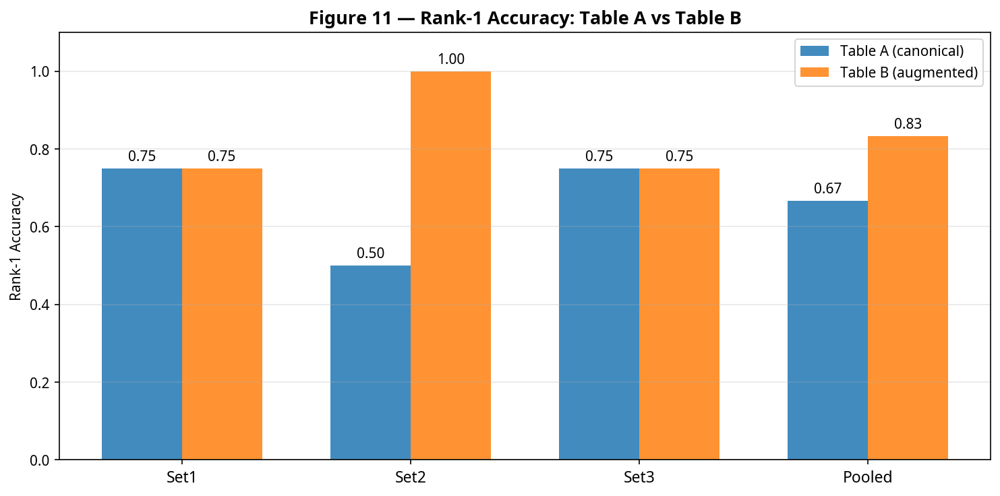
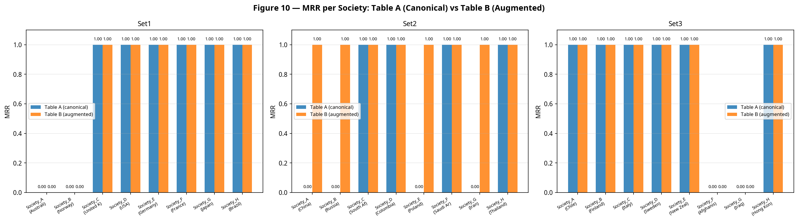
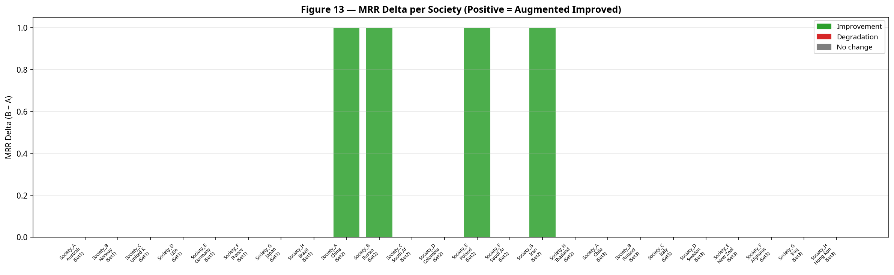
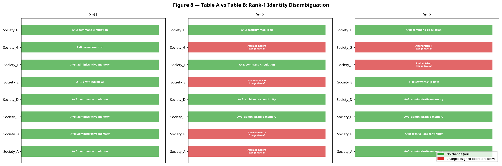
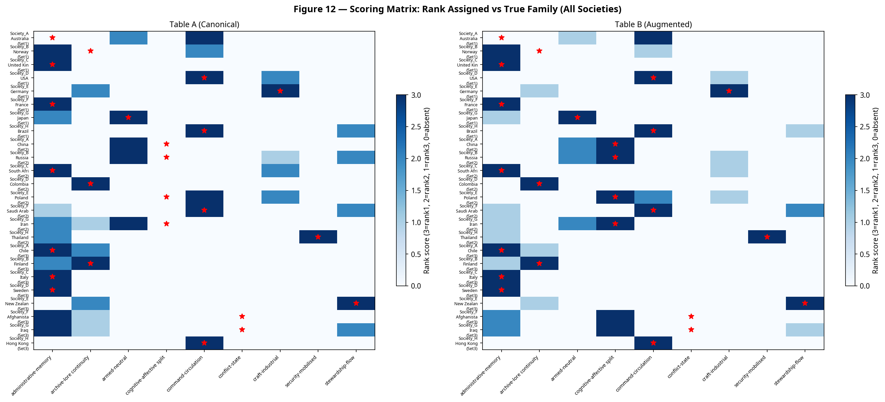
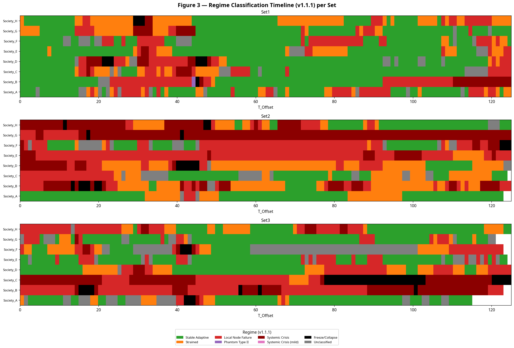
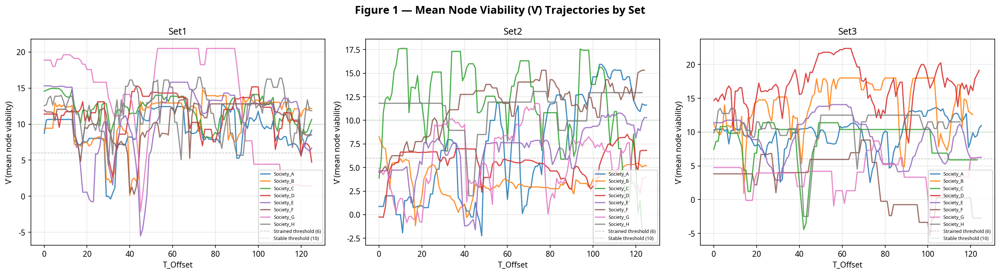
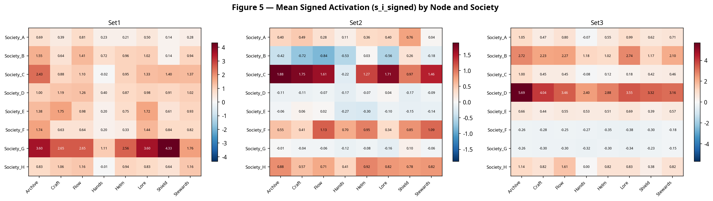

Cognitive-affective extension — 3 blind sets · 24 societies · 3,000+ society-years
This page presents results of the JUNO/CAMS Blind-Analysis Protocol v1.1.1, which tested whether decomposing the legacy activation term into distinct cognitive (gᵢ) and affective/energy (eᵢ) components improves morphological classification and identity disambiguation. Three unlabelled blind sets of 8 societies each were analysed using a strict falsification-first two-track design: canonical operators locked first, then cognitive-affective operators computed, keys revealed only at Stage 6.
conflict-state), which were incorrectly relabeled to cognitive-affective split with high confidence. This triggered the calibration degradation penalty.
| Set | Track 1 MRR | Track 2 MRR | Delta | Finding |
|---|---|---|---|---|
| Set 1 | 0.750 | 0.750 | 0 | Honest null — signed operators confirmed canonical; Hands Drag detected in 6/8 societies |
| Set 2 | 0.500 | 1.000 | +0.500 | High disambiguation value — 4 misclassifications corrected (China, Russia, Poland, Iran → cognitive-affective split) |
| Set 3 | 0.750 | 0.750 | 0 (net) | Calibration failure on Afghanistan and Iraq; 2 correct relabelings offset by 2 false-positive upgrades |
The calibration gate failure reveals a specific limit of the v1.1.1 signed operators: while they correctly decode masked internal stress in authoritarian and transitional states — where high cognitive elaboration coexists with negative affective valence — they misinterpret structural collapse in active conflict states. In Afghanistan and Iraq, extreme viability failure (Vᵢ < 0) combined with negative affective valence was misclassified as a cognitive-affective inversion rather than a Freeze/Collapse event.
cognitive-affective split labels being assigned to societies undergoing fundamental systemic collapse. Implementation is planned for a future protocol iteration.
The sign test (one-sided binomial, H₀: no improvement) returned p = 0.0625 on 4 positive deltas, 0 negative deltas, and 20 tied societies — below the α = 0.05 threshold, primarily because only 4 of 24 classifications changed rank. The improvement is real but not yet statistically significant at the required confidence level given the current sample size.
All figures generated programmatically from the scored corpus. Click any image to open full-size.

Fig 11 — Rank-1 accuracy: canonical (Track 1) 66.7% vs augmented (Track 2) 83.3%

Fig 10 — MRR per society; note Set 2 improvements

Fig 13 — MRR delta; positive = Track 2 improvement

Fig 8 — Disambiguation summary; red bars = Track 2 forced primary family relabeling

Fig 12 — Full classification scoring matrix

Fig 3 — Regime classification timeline (v1.1.1)

Fig 1 — Mean Vᵢ trajectories by set

Fig 5 — Signed activation heatmap sᵢ_signed by node